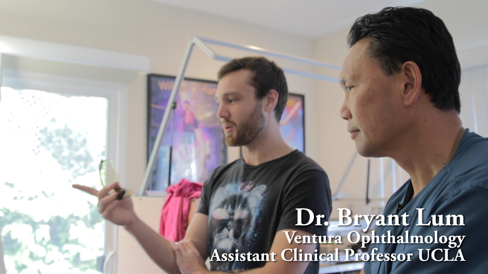

{kind=link}
I've never opened a blog post with a disclaimer before...
Disclaimer
This blog/video tests the protection provided by regular polycarbonate safety glasses against an 80w CO2 laser. The following experiment and research might suggest these provide sufficient protection, but no claim can be made since shop glasses are not rated for laser protection.
Properly rated laser glasses are guaranteed to provide sufficient protection.
What?
CO2 lasers, like most lasers, are scary.
There are a few ways a high power laser can damage your eyes:
| Pig eye hit by 80 watt CO2 laser |
{kind=link}
- Direct contact with the beam
- Reflections from the beam
- Secondary light produced when the beam strikes an object
You might laugh at "direct contact", but I can tell you from personal experience that cheap home-built laser cutters aren't the epitome of safe. My two incidents involved burning a hole in the wall across the room, and a laser haircut. Both accidents happened while aligning the laser mirrors.
Eyewear should be worn to protect against any accidents or potential long term exposure.
Why?
Properly rated laser glasses aren't cheap ($40+), so lots of people use non-rated polycarbonate safety glasses instead ($5+).
Can regular safety glasses protect as well as the rated safety glasses?
The answer is maybe kindof.
The answer is maybe kindof.
Video
Filming by CameraManJohn
Materials
- 80 watt CO2 laser cutter
- 10600nm laser safety glasses
- Polycarbonate safety glasses
- MLX90614 Thermopile
- NTE3034A Phototransistor
- Arduino Uno
- Crappy laptop
- Locally sourced gluten-free pig eyes
Procedure/Results
No laser lens was used for these tests. The unfocused beam is about 2mm in diameter.
Unprotected pig eye
Blast the unprotected pig eye with a pulse of full laser power.
| Pig eye blasted with 80 watt CO2 laser |
{kind=link}
The sound it made was horrifying, but now we know what happens without eye protection.
Convince local eye surgeon Dr. Bryant Lum of Ventura Ophthalmology to come to your studio apartment and look at your weird experiment.
| Laser damage |
|  |
| Dr. Bryant Lum |
{kind=link}
Dr. Lum suggested a good cornea transplant could restore 70-95% original vision. However this doesn't consider potential damage to the retina.
Pig eye with glasses
Blast pig eye covered with regular safety glasses.
There doesn't appear to be any damage. We probably should have switched to the other eye, since the old damage is kinda close.
There doesn't appear to be any damage. We probably should have switched to the other eye, since the old damage is kinda close.
| Safety glasses: pig eye blasted with 80 watt CO2 laser |
{kind=link}
Blast pig eye covered by laser glasses.
Again, there doesn't appear to be any damage.
Again, there doesn't appear to be any damage.
| Laser glasses: pig eye blasted with 80 watt CO2 laser |
{kind=link}
Notice the bright flash of visible light when the laser strikes.
| Secondary light |
{kind=link}
Even though the laser is 10600nm, the high energy impact produces light of drastically different wavelengths.
Glasses and Light Sensors
There's no apparent damage to the eyes protected by glasses, but let's try to quantify it. An Arduino Uno was wired up to a MLX90614 thermopile to measure infrared light (5.5um - 14um) and a NTE3034A Phototransistor to measure visible light. These sensors don't cover the entire spectrum, but should give us a good idea what the glasses are doing.
Every object emits infrared light as a function of its temperature. The thermopile figures an object's temperature by measuring the IR light emitted. That's why I'm recording the infrared intensity in degrees celsius.
First I did something of questionable safety to test the thermopile and glasses' ability to block reflected laser light: the unfocused laser beam was shot through the cutting table and reflected toward the thermopile using crumpled aluminum foil.
The sensor was exposed to the reflection with and without the glasses.
| Infrared and visible light sensors |
{kind=link}
First I did something of questionable safety to test the thermopile and glasses' ability to block reflected laser light: the unfocused laser beam was shot through the cutting table and reflected toward the thermopile using crumpled aluminum foil.
| Measuring reflected laser light |
{kind=link}
| Laser reflecting off aluminum foil |
{kind=link}
The test between glasses wasn't identical, but in each case there's a massive reduction of infrared light when the glasses are placed in front of the sensor. This happens around sample 50 for the safety glasses, and 210 for the laser glasses.
There was no change in visible light, so I've omitted it from the graph.
| Glasses vs Laser Reflection |
{kind=link}
Next I fired the unfocused beam directly into the laser glasses. No calibration was performed on the visible light sensor; I recorded the raw, potentially nonlinear, 10bit ADC values. The same setup was then moved outside to measure the sensor readings caused by the sun.
| Sensor Diagram |
{kind=link}
Large spikes of visible light can be seen during each laser pulse. There is a very gradual change in the infrared reading likely caused by the laser energy being absorbed and conducting slowly through the glasses.
| Laser glasses direct hit - visible and infrared light |
{kind=link}
The dips in the outdoor tests are caused by blocking sunlight with my hand.
| Visible Light measured under the laser and sun |
{kind=link}
| Relative brightness |
{kind=link}
Talk to Laser Eyewear Experts
I talked to a laser eyewear company, without telling then what I was doing, who recommended glasses with an optical density of 4 (OD4) for an 80 watt CO2 laser. Optical density describes what percent of the wavelength is blocked:
- OD1 99%
- OD2 99.9%
- OD3 99.99%
- repeating of course
OD4 is apparently pretty low in the safety glass world; most retailers sell OD5+.
When I asked about using regular safety glasses in place of laser glasses, the guy let out the most defeated sigh I've ever heard. It sounded like this looks:
He then said they PROBABLY provide enough protection, but only certified laser glasses will GUARANTEE enough protection.
Conclusion
Both the laser glasses and safety glasses in this experiment blocked:
- Direct high intensity infrared light (5.5um - 14um)
- Reflected infrared light (5.5um - 14um)
The high energy impact of the laser produces visible light of intensity comparable to looking into the sun.
This data suggests the SAFETY GLASSES WE TESTED might provide adequate protection. The problem is not all safety glasses are the safety glasses we tested. Apparently some brands use plastics other than polycarbonate which would mean different optical properties.
I conclude that using regular polycarbonate safety glasses with adequate side eye protection is probably safe, but you're taking a risk.
Laser cut glass
ReplyDelete